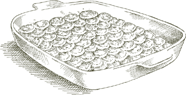

THE WORD gnocco in Italian means a little lump, such as the one that might be raised by sharply knocking your head against a hard object. Gastronomically speaking however, gnocchi should be anything but lumpish. Whether they are made of potatoes, semolina flour, or spinach and ricotta, as in the recipes that follow, the essential characteristic of well-made gnocchi is that they be fluffy and light.
GOOD COOKS in the Veneto, where cloud-light gnocchi are as much a part of the tradition as creamy risotto, are loath to add eggs to the potato dough. Some people do use eggs because the dough becomes easier to handle, but that method, which is called alla parigina, “Paris style,” results in a tougher, more rubbery product.
The choice of potato is critical. Neither a baking potato, such as the Idaho, nor any kind of new potato, is suitable. The first is too mealy and the second is too moist, and if you use either, gnocchi are likely to collapse while cooking. The only reliable potato for gnocchi is the more or less round, common kind known as a “boiling” potato. In Italy, where there are no baking potatoes, and both new and old are of the boiling, waxy variety, you would ask for “old” potatoes if you are making gnocchi.
For 6 servings
1½ pounds boiling potatoes
1½ cups unbleached all-purpose flour
1. Put the potatoes with their skins on in a pot of abundant water, and bring to the boil. Cook until tender. Avoid testing them too often by puncturing with a fork because they may become waterlogged. When done, drain them and pull off their skins while hot. Purée them through a food mill and onto a work surface while they are still warm.
2. Add most of the flour to the puréed potatoes and knead into a smooth mixture. Some potatoes absorb less flour than others, so it is best not to add all the flour until you know exactly how much they will take. Stop adding flour when the mixture has become soft and smooth, but still slightly sticky.
3. Dust the work surface lightly with flour. Divide the potato and flour mass into 2 or more parts and shape each of them into a sausage-like roll about 1 inch thick. Slice the rolls into pieces ¾ inch long. While working with gnocchi, dust your hands and the work surface repeatedly with flour.
4. You must now shape the gnocchi so that they will cook more evenly and hold sauce more successfully. Take a dinner fork with long, slim tines, rounded if possible. Working over a counter, hold the fork more or less parallel to the counter and with the concave side facing you.

With the index finger of your other hand, hold one of the cut pieces against the inside curve of the fork, just below the tips of the prongs. At the same time that you are pressing the piece against the prongs, flip it away from the tips and in the direction of the fork’s handle. The motion of the finger is flipping, not dragging. As the piece rolls away from the prongs, let it drop to the counter. If you are doing it correctly, it will have ridges on one side formed by the tines and a depression on the other formed by your fingertip. When gnocchi are shaped in this manner, the middle section is thinner and becomes more tender in cooking, while the ridges become grooves for sauce to cling to.
5. Choose, if possible, a broad pan of about 6 quarts’ capacity and approximately 12 inches in diameter. The broader the better because it will accommodate more gnocchi at one time. Put in about 4 quarts of water, bring to a boil, and add salt. Before putting in the whole first batch of gnocchi, drop in just 2 or 3. Ten seconds after they have floated to the surface, retrieve them and taste them. If the flavor is too floury, you must add 2 or 3 seconds to the cooking time; if they are nearly dissolved, you must subtract 2 or 3 seconds. Drop in the first full batch of gnocchi, about 2 dozen. In a short time they will float to the surface. Let them cook the 10 seconds, or more, or less, that you have determined they need, then retrieve them with a colander scoop or a large slotted spoon, and transfer to a warm serving platter. Spread over them some of the sauce you are using and a light sprinkling of grated Parmesan. Drop more gnocchi in the pot and repeat the whole operation. When all the gnocchi are done, pour the rest of the sauce over them and more grated Parmesan, turn them rapidly with a wooden spoon to coat them well, and serve at once.
Recommended sauce  Gnocchi take well to many sauces, but three particularly happy choices are Tomato Sauce with Onion and Butter; Pesto; and Gorgonzola Sauce.
Gnocchi take well to many sauces, but three particularly happy choices are Tomato Sauce with Onion and Butter; Pesto; and Gorgonzola Sauce.
Note If the potatoes you work with produce gnocchi dough that dissolves or collapses in cooking, you must add 1 whole egg to the puréed potatoes.
WHEN YOU EAT the spinach and ricotta gnocchi in the recipe given below it will remind you of the stuffing of spinach- or chard-filled tortelloni without the pasta around it. As the instructions that follow will show, they can be served like potato gnocchi, or as soup dumplings, or gratinéed like semolina gnocchi.
For 4 servings
1 pound fresh spinach OR 1 ten-ounce package frozen leaf spinach, thawed
2 tablespoons butter
1 tablespoon onion chopped very fine
2 tablespoons chopped prosciutto OR for milder flavor, boiled unsmoked ham
Salt
¾ cup fresh ricotta
⅔ cup all-purpose flour
2 egg yolks
1 cup freshly grated parmigiano-reggiano cheese, plus additional cheese at the table
Whole nutmeg
1. If using fresh spinach: Soak it in several changes of water, and cook it with salt until tender, as described. Drain it, and as soon as it is cool enough to handle, squeeze it gently in your hands to drive out as much moisture as possible, chop it rather coarse, and set aside.
If using thawed frozen leaf spinach: Cook in a covered pan with salt for about 5 minutes. Drain it, when cool squeeze all the moisture out of it that you can, and chop it coarse.
2. Put the butter and onion in a small skillet, and turn the heat on to medium. Cook and stir the onion until it becomes colored pale gold, then add the chopped prosciutto or ham. Cook for just a few seconds, long enough to stir 2 or 3 times and coat the meat well.
3. Add the cooked, chopped spinach and some salt, and cook for about 5 minutes, stirring frequently.
4. Turn out the entire contents of the skillet into a bowl, and when the spinach has cooled down to room temperature, add the ricotta and flour, and stir with a wooden spoon, mixing the ingredients well. Add the egg yolks, grated Parmesan, and a tiny grating—about ⅛ teaspoon—of nutmeg, and mix with the spoon until all the ingredients are evenly amalgamated. Taste and correct for salt.
5. Make small pellets of the mixture, shaping them quickly by rolling them in the palm of your hand. Ideally they should be no bigger than ½ inch across, but if you find it troublesome to make them that small, you can try for ¾ inch. The smaller the better, because they cook more quickly and favor a better distribution of sauce. If the mixture sticks to your palm, dust your hands lightly with flour.
6. If serving with sauce: Drop the gnocchi, a few at a time, into 4 to 5 quarts of boiling, salted water. When the water returns to a boil, cook for 3 or 4 minutes, then retrieve them with a colander scoop or a large slotted spoon, and transfer to a warm serving platter. Spread over them some of the sauce you are using. Drop more gnocchi in the pot and repeat the whole operation. When all the gnocchi are done, pour the rest of the sauce over them, turn them rapidly to coat them well, and serve at once, with grated Parmesan on the side.
If serving in soup: Bring 2 quarts of Basic Homemade Meat Broth, prepared as directed, to a boil. Drop in all the gnocchi and cook for 3 to 4 minutes after the broth returns to a boil. Ladle into soup plates and serve with grated Parmesan on the side. When served in soup, gnocchi go further, and the recipe above should produce 6 satisfactory servings.
Recommended sauce Tomato Sauce with Heavy Cream may be the most appealing, both in flavor and appearance; another excellent combination is with Butter and Sage Sauce. Spinach and Ricotta Gnocchi are delicious as soup dumplings, served in Basic Homemade Meat Broth.
For 4 servings
The gnocchi from this recipe
A bake-and-serve dish
3 tablespoons butter plus more butter for greasing the pan
½ cup freshly grated parmigiano-reggiano cheese, plus additional cheese at the table
1. Preheat oven to 375°.
2. Thickly smear the baking dish with butter.
3. Drop the gnocchi, a few at a time, into 4 to 5 quarts of boiling, salted water. When the water returns to a boil, cook for 2 or 3 minutes, then retrieve them with a colander scoop or a large slotted spoon, and transfer to the baking dish. Drop more gnocchi in the pot and repeat the procedure described above, until you have got all the gnocchi cooked and in the baking dish.
4. Melt the 3 tablespoons of butter in a small saucepan and pour it over the gnocchi, distributing it evenly. Sprinkle the ½ cup grated Parmesan on top.
5. Bake on the uppermost rack of the preheated oven until the cheese melts, about 5 minutes. Remove from the oven and allow to settle for several minutes, then serve at table directly from the baking dish with grated Parmesan on the side.

THE BATTER for semolina gnocchi, which in Italy are often called gnocchi alla romana, uses the yellow, coarsely ground flour of hard or durum wheat.
The problem some cooks have with semolina gnocchi is that in the baking, the batter runs together and they become shapeless. This usually happens because it has not been cooked long enough with the milk. I have found the batter requires at least 15 minutes of cooking and stirring for it to acquire, and later maintain, the necessary consistency.
For 6 servings
1. Put the milk in a heavy-bottomed saucepan and turn on the heat to medium low. If possible slip a flame-tamer under the pot. When the milk forms a ring of tiny, pearly bubbles, but before it comes to a boil, turn down the heat to low, and add the semolina flour, pouring it out of a clenched fist in a very thin, slow stream and, with a whisk in your other hand, beating it into the milk.
2. When all the semolina has gone into the pot, stir it with a long-handled wooden spoon. Stir continuously and with thoroughness, bringing the mixture up from the bottom and loosening it from the sides of the pot. Be prepared for some resistance because the flour and milk mixture quickly becomes very dense. In little more than 15 minutes and less than 20, the mixture forms a mass that comes cleanly away from the sides of the pot.
3. Remove from heat, let it cool just slightly, for about a minute, then add two-thirds of the grated Parmesan, 2 teaspoons of salt, the egg yolks, and the 2 tablespoons of butter to the batter. Mix immediately and rapidly to avoid having the egg yolks set.
4. Moisten a laminated or marble surface with cold water, and turn the gnocchi batter out over it, using a spatula to spread it to an even thickness of about ⅜ inch. Dip the spatula in cold water from time to time as you use it. Let the batter cool completely.
5. Preheat oven to 400°.
6. When the batter has cooled off completely, cut it into disks, using a 1½-inch biscuit cutter or a glass of approximately the same diameter. Moisten the tool from time to time in cold water as you use it. (Do not discard the trimmings, see the note below.)
7. Smear the bottom of a bake-and-serve dish lightly with butter. On the bottom, arrange the gnocchi in a single layer, overlapping them roof-tile fashion. On top spread the prosciutto or bacon or ham strips, sprinkle with the remaining grated Parmesan, and dot sparingly with butter. Bake on the uppermost rack of the preheated oven for 15 minutes, until a light, golden crust has formed and the prosciutto or bacon or ham has become crisp. After removing from the oven, allow to settle for 5 minutes before bringing to the table and serving directly from the baking dish. If you find that the underside of the gnocchi has fused together, it is perfectly all right, as long as the top side maintains its shape.
Ahead-of-time note Semolina gnocchi can be completely prepared and assembled in their baking dish up to 2 days in advance. Cover tightly with plastic wrap before refrigerating. Keep the trimmings, too, in the refrigerator, in a tightly sealed container.
Knead the trimmings together briefly into a ball up to a day or two before you plan to use them. When you are ready to make the fritters, divide the ball into croquette-size pieces, adding a pinch of salt and shaping them into short, plump forms tapered at both ends, about 2½ inches in length. Roll them in dry, unflavored bread crumbs and fry them in hot vegetable oil until they form a light crust all over. Serve as you would croquettes, or French fried potatoes, as though it were an accompanying vegetable, without any sauce.